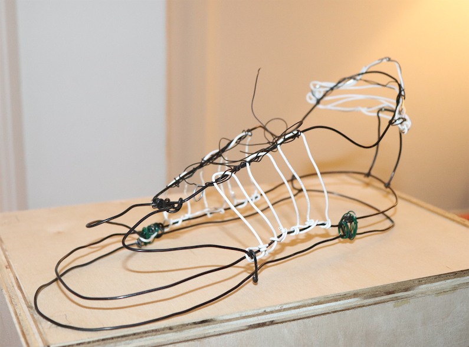

My name is Phoebe Racz and I am a San Francisco-based design student with an interest in print and web design.
PetalHeads
People and petals go hand in hand. The uniquness of each piece accentuates the beauty of the whole. I wanted to incorperate florals into portraits of disninct human faces in order to brighten the other.
Sue Doeksen:
Personal Logo
When asked to created a personilized logo for the incredible designer, Sue Doeksen, I made sure to incorperate her iconic and cartoonish style, aswell as using her blonde hair and blue eyes to pay tribute to her as a woman, as well as an artist.
